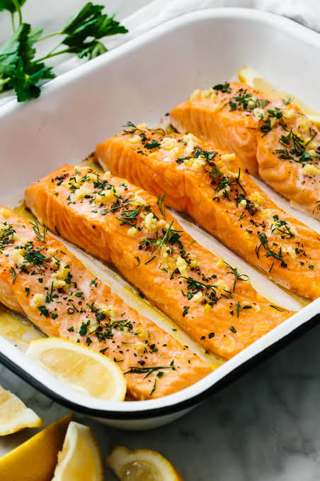

Salmon in the oven

Ingredients
- 1 fillet of salmon, skinned (tails are cheapest)
- Any veggies you like: tomatoe, peppers,
- zucchinis, etc Liquid cream
- Black pepper
- Salt
Methods
- Put the salmon in an oven dish -- add chopped veggies and cream on top-- with salt and pepper
- Grill on a high heat for about 25 min. If it is a thick fillet, it will take longer to cook through, always check if the middle if cooked.
- You can serve it with rice or pasta